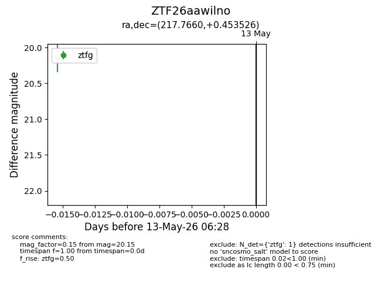
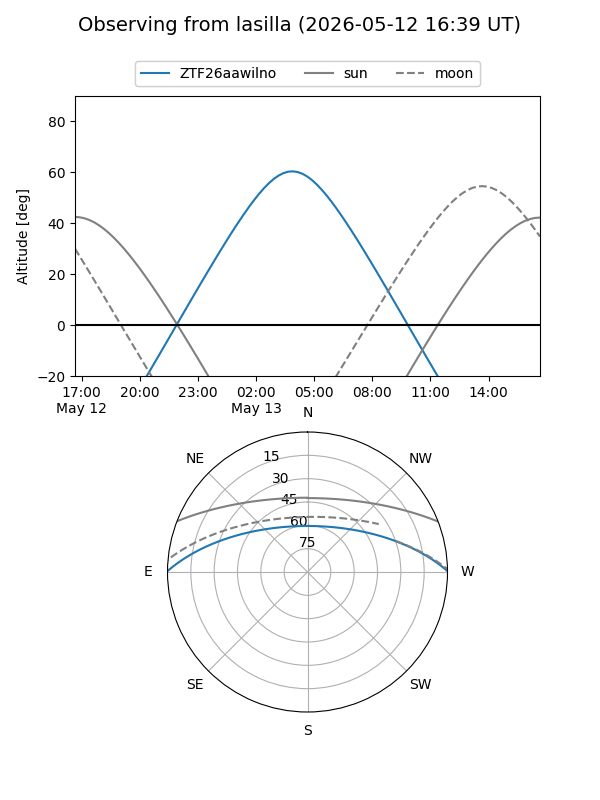
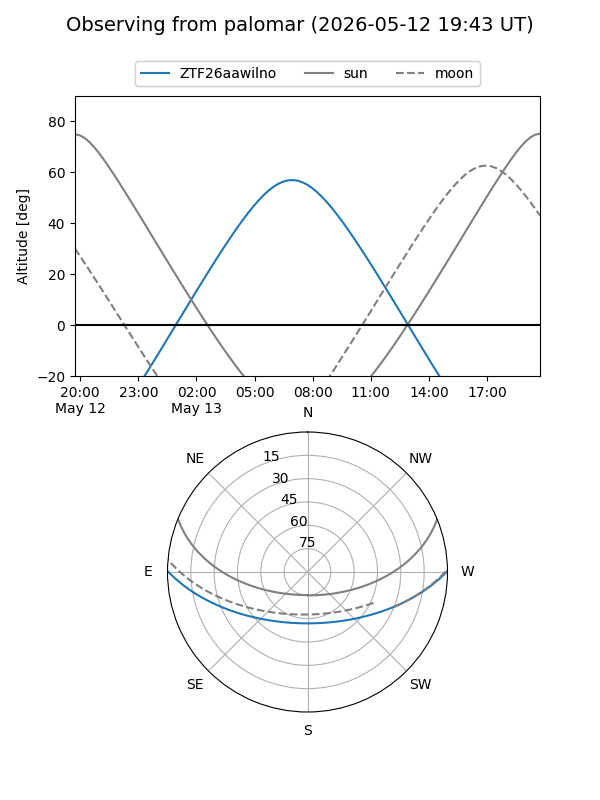

ZTF26aawilno
Target ZTF26aawilno at 2026-05-13 06:30
Aliases and brokers:
FINK: link
Lasair: link
ALeRCE: link
alt names
ZTF26aawilno (ztf,fink_ztf)
Coordinates:
equatorial (ra, dec) = 217.7660,+0.45353
equatorial (HMS+DMS) = 14:31:03.83,+00:27:12.70
galactic (l, b) = (348.9430,+54.17416)
Flags:
Photometry:
last ztfg=20.15
1 ztfg detections
Lightcurve

Visibility


Additional plots